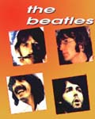

В нашем веке появились многие новые направления в музыке, корни которых, тем не менее, уходят в глубь истории. Одним из самых значительных явлений стало появление четверки Битлз
, которая определила не только музыкальные увлечения, но и стиль жизни целого поколения молодежи 60–70 годов. Главное в песнях Битлз
— чудесные мелодии, которые музыканты называют evergreen
— вечнозеленые. Лучшей мелодией 70-х годов стала песня Yesterday
группы Битлз
.

Открытием 80-х годов стала группа Queen
. Ее песня Show must go on
по сей день остается популярной и любимой. В отличие от песен многих современных групп, важное значение в песнях Queen
играют тексты — философская попытка осмысления жизни и своей роли в ней.

В Советском Союзе в период оттепели
возникло новое направление в поэзии и музыке — авторская песня. Его создали люди разных профессий — актеры, журналисты, физики, литераторы — которые сами писали стихи и музыку и сами исполняли свои песни. Одним из самых любимых и известных авторов был актер Владимир Высоцкий (1938–1980). С 1964 года Высоцкий работал в Московском театре драмы и комедии на Таганке. Он стал широко известен благодаря фильмам Вертикаль
(1967), Короткие встречи
(1968), телефильму Место встречи изменить нельзя
(1979).